| country | continent | year | lifeExp | pop | gdpPercap |
|---|---|---|---|---|---|
| Afghanistan | Asia | 1952 | 28.801 | 8425333 | 779.4453 |
| Afghanistan | Asia | 1957 | 30.332 | 9240934 | 820.8530 |
| Afghanistan | Asia | 1962 | 31.997 | 10267083 | 853.1007 |
| Afghanistan | Asia | 1967 | 34.020 | 11537966 | 836.1971 |
| Afghanistan | Asia | 1972 | 36.088 | 13079460 | 739.9811 |
| Afghanistan | Asia | 1977 | 38.438 | 14880372 | 786.1134 |
Machine learning
Week 1: what is it, and why?
Joshua Loftus
LSE
ST310: Machine Learning (for Data Science)
Lecturer: Joshua Loftus
Website: Moodle, and ml4ds.com
Seminars start this week. Bring a laptop with R and RStudio (see about).
A request. As a courtesy to me, please don’t use “AI” tools in your communications with me or the teaching staff. This also applies to all aspects of this course. We are here to train our own minds, not to replace them. I’ll say more about why during the term.
About the course
Course info, teaching philosophy, ML overview
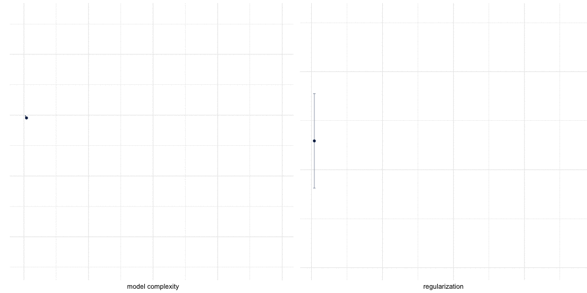
Format
- Mostly self-contained – ask if you need help!
- Weekly readings, lectures, seminars
- Seminars: problems on paper first, then computing. Bring a laptop
- ml4ds.com: links, slides, notebooks
Reading
- ISLR Introduction to Statistical Learning
- CausalML Applied Causal Inference Powered by ML and AI
- PPA Patterns, Predictions, and Actions
Supplemental
Quick preview
Don’t worry about following all the details now
We’ll introduce R coding gradually
The gapminder data
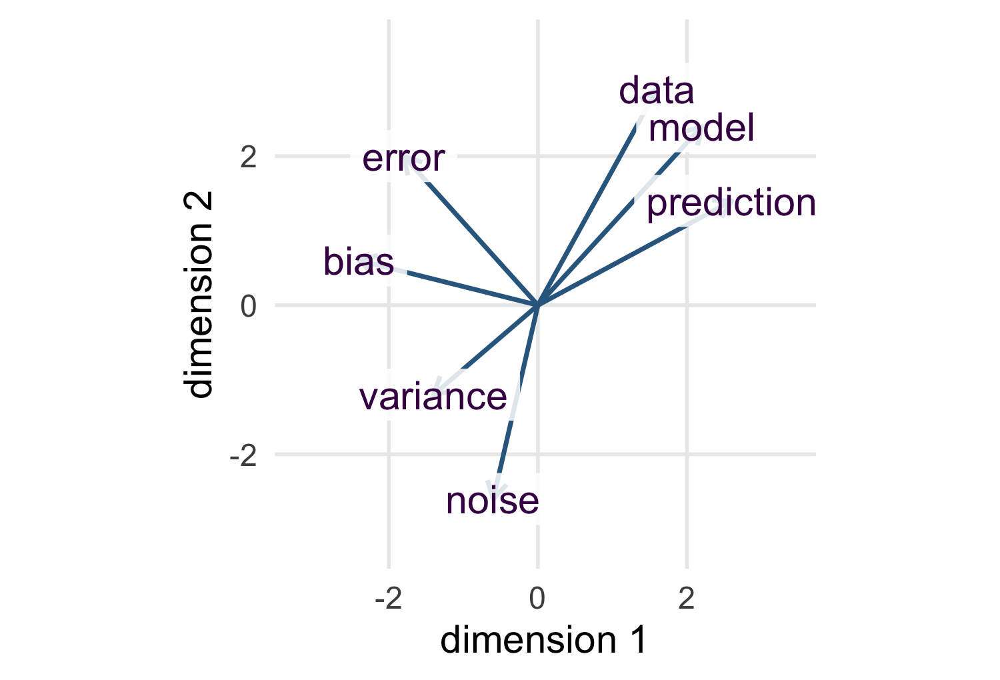
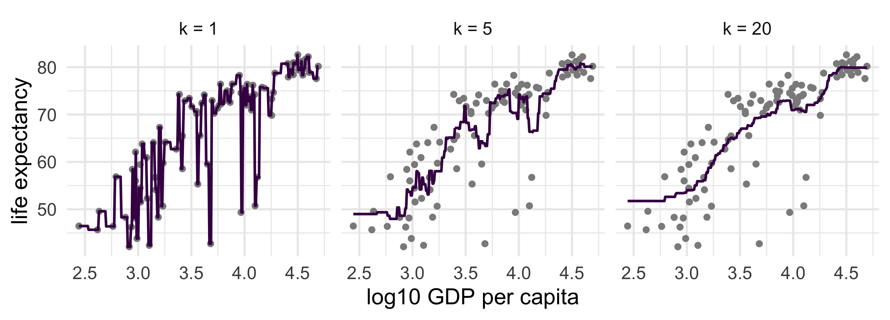
Machine learning in one picture

Source: xkcd 2048, CC BY-NC 2.5
Teaching/course philosophy
Recurring themes
Concepts that keep coming back
- Held-out evaluation: a model is judged on data it never saw
- Bias–variance: flexible models need data near the point
- Prediction \(\neq\) explanation \(\neq\) intervention
- Fitting to residuals: one operation in regression, additive models, boosting, causal ML
- Distribution shift: test data look like training data by construction; the world need not
How the course runs
- Learning takes work: productive struggle, two words, both necessary
- Knowing a method includes knowing what it does not establish
Please allow me to introduce myself
I’m Joshua Loftus
- From the US; used to teach at NYU
- Cambridge postdoc; Stats PhD from Stanford
- Reproducibility, fairness, interpretability, causality
- First-gen at university
- Travel, reading, audiobooks, lifting and, NEW: parenting

What is “Machine Learning”?
And why is it that?
Machine learning applications
Can you think of an example? (Write it down)
- Electronic health records to predict which patients will require more care
- Genome sequence data for tissue samples to detect different kinds of cancer
- Text scraped from social media to predict events of social unrest, or track spread of misinformation
- Tech platform user data to target relevant content, or detect policy/regulation violations
- Learning adaptive control of robot prosthesis
etc…
Machine learning, proper
These application examples help motivate the value of ML
(Actually, much of the value comes from work specific to the application, like the creation/gathering/processing of the data, and the real world actions taken based on the output of ML)
We’ll use “ML” to refer to the theory and general methods
(Skills like gathering and cleaning data are very useful–and we’ll practice them a little–but they’re not the main focus of this course)
Machine learning, the field
Two lineages
- Statistics: least squares (Gauss, Legendre, c. 1805), regression, likelihood. Models of how data arise
- Computer science: the perceptron (1958), learning theory (Valiant 1984). Algorithms that improve with data
Breiman (2001) called them the two cultures
Where the field meets
- ICML, first held 1980
- NeurIPS (as NIPS), 1987
- COLT, 1988
- Machine Learning journal, 1986; JMLR, 2001
Conference papers, not journal articles, are the main currency (unusual among sciences)
What is “artificial intelligence”?
(Don’t tell anyone I said this, but) It’s a collection of computational tools that people use to create mathematically structured data out of non-mathematically structured data
e.g. a (possibly randomized) function from \(\{ \text{some image file type} \} \to \mathbb R^d\) for some \(d\).
e.g. word embedding for text data: each word becomes a vector
We’ll usually assume our data is already mathematically structured
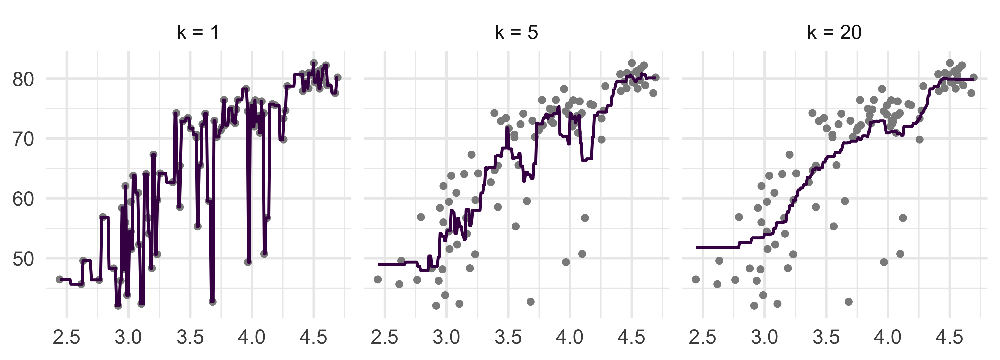
Abstraction and notation
Along came some data which someone formats as a collection of \(p\) distinct variables
\[ X = (X_1, X_2, \ldots, X_p) \in \mathbb R^p \]
We assume each observation is a point in a vector space (which we also implicitly assumed is finite-dimensional, and that’s OK by any practical standard)
Question: is there a \(Y\) variable?
Think about your application example (the one you wrote down)
Categories of ML tasks
Supervised learning (this whole course)
Often we focus on one variable, name it \(Y\), and give it the special status of being an “outcome”/“response”
Not this course: unsupervised learning (clustering, dimension reduction), ranking, anomaly detection, network data, embeddings, recommender systems, bandits, etc.
Supervised ML sub-categories
If \(Y\) is numeric: regression
- Concentration levels of a protein (disease status/severity)
- Selling price of a house
If \(Y\) is categorical: classification
- Should this item be flagged for (human) review? yes/no
- Identify type of cancer: lymphoma, sarcoma, neuroblastoma, etc
Special cases: \(Y\) binary with rare cases (anomaly detection); \(Y\) a time to event (survival analysis); multi-class, hierarchical classes, etc.
Focus on regression
- Simpler math (orthogonal projection, Euclidean geometry)
- Intuition pump for other cases
- Often underlies other cases

- e.g. binary classification by thresholding a numeric score, or ranking (ordinal outcome) / set selection (select items with \(\text{top-}k\) scores)
How to predict \(Y\) from \(X\)?
Would be sweet if \(\exists f\) such that the graph of the function \(y = f(x)\) fit the data perfectly
Problem: what if \((x_1, y_1) = (1, 0)\) and \((x_2, y_2) = (1, 1)\)?
Problem: even our most tested and verified physical laws won’t fit data perfectly
Solution: applied mathematics
For any function \(f\) we can always write \(\varepsilon \equiv y - f(x)\). Look for an \(f\) which makes these “errors” “small” for the observed data
Uncertainty opens the door for probability
- Assume a probability distribution (adequately) models the data/errors
Define the best function \(f^\star\) as the minimizer, over all \(f\), of
\[ \mathbb E[\varepsilon^2] = \mathbb E\{[Y - f(X)]^2\} \]
- Assume the data/error is sampled independently
Motivates the plug-in principle: compute an estimate \(\hat f\) of the best function \(f^\star\) by solving the corresponding problem on the dataset, i.e.
\[ \text{minimize} \sum_{i=1}^n \left[y_i - \hat f(x_i)\right]^2 \]
Very useful assumptions!
The why of machine learning: “it works”
- Squared error \(\rightarrow\) simpler math
(we’ll come back to this and consider other loss functions)
- i.i.d. sampling \(\rightarrow\) simpler estimation, justifies generalization
(we’ll come back to this too)
Machine learning as competition
A prediction competition:
- curated data, the same for every competitor
- a task: submit a model that predicts \(y\) from \(x\) for units nobody has seen
- an agreed score
- an evaluation dataset the competitors cannot see
Winning model chosen by best score
History: common task framework
| 1986 | DARPA funds speech recognition on the condition that every group is scored on the same held-out data by an outside referee (NIST). Progress, measured, for the first time |
| 2006 | Netflix offers $1,000,000 for a 10% improvement on its own recommender |
| 2010 | Kaggle opens; ImageNet’s first yearly challenge (ILSVRC) |
Donoho (2017) called the recipe the common task framework and credited it with most of what “machine learning” has achieved since
Netflix challenge
$1,000,000
for the first team to beat Netflix’s own recommender by 10%
100 million ratings; score on 3 million held back
3 years
5,000 teams submitted
And then
The winning blend of hundreds of models was never put into production
Netflix said the gain wasn’t worth the engineering, and the business had moved to streaming
The sequel was cancelled: researchers had re-identified “anonymous” users from their ratings
Winning a competition is not always useful. This course will help you understand why
Prediction, loss, held-out set
Training data: \(n\) units \((x_i, y_i)\), \(i = 1, \ldots, n\), inputs \(x_i\) and outcomes \(y_i\), both known
Test data (held out): \(m\) more units \((x_j^{\text{test}}, y_j^{\text{test}})\), \(j = 1, \ldots, m\); competitors see only the \(x_j^{\text{test}}\)
A predictor \(\hat f\) is built from the training data alone
A loss scores one prediction: today, \(\ell(y, \hat y) = (y - \hat y)^2\)
The test error is the average loss over the test data: \[ \widehat{\text{Err}} = \frac{1}{m} \sum_{j=1}^{m} \ell\big(y_j^{\text{test}}, \hat f(x_j^{\text{test}})\big) \]
That number is the leaderboard.
One rule before we start
An input is fair game only if you would have it at the moment you need the prediction
Predict 2007 life expectancy from GDP: fine
Predict a patient’s readmission from the discharge letter written after readmission: not fine
Predict a house’s sale price from its list price: fine. From the price it eventually sold for: that’s the answer, not an input
Your first task
You are given GDP per capita for all 142 countries
and life expectancy for 100 of them
Predict life expectancy for the other 42
Someone else has the answers and will score you
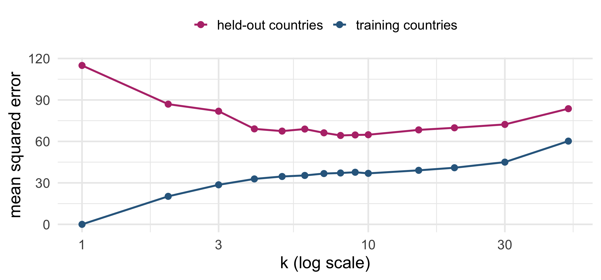
crosses: the 42 countries you must predict
Write down, in one line, how you would do it.
Where would you look?
You know nothing about a country except its GDP.
Where would you look for its life expectancy?
Remember that you have life expectancy data about some other countries…
History: k-nearest neighbors
Evelyn Fix and Joseph Hodges, Berkeley
A report for the US Air Force School of Aviation Medicine, Texas
The idea: to classify a new case, look at the cases nearest to it
Unpublished until 1989. By then it had a name and was everywhere
Cover and Hart, 1967: with enough data, one nearest neighbor gets within a factor of two of the best possible error (for classification, as \(n \to \infty\))
\(k\) nearest neighbors
For a new input \(x_0\): find the \(k\) training inputs closest to it, \((x_{(1)}, y_{(1)}), \ldots, (x_{(k)}, y_{(k)})\), and average their outcomes \[ \hat f_k(x_0) = \frac{1}{k} \sum_{l=1}^{k} y_{(l)} \]
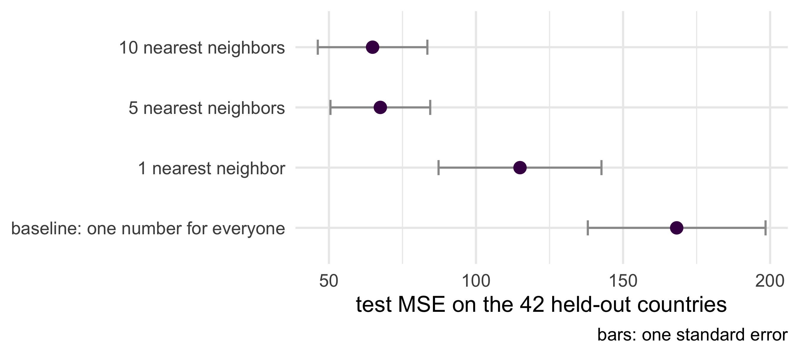
No formula, no parameters. One choice: \(k\).
CTF competition: which \(k\) would you submit?
Look at the three panels again. Write down the \(k\) you would enter in the competition, and one reason.
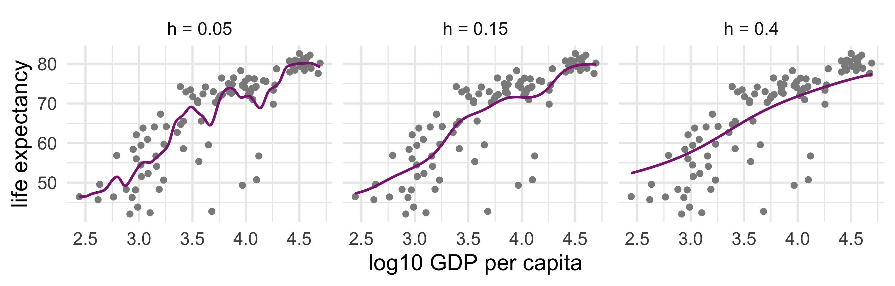
The score, for every \(k\)
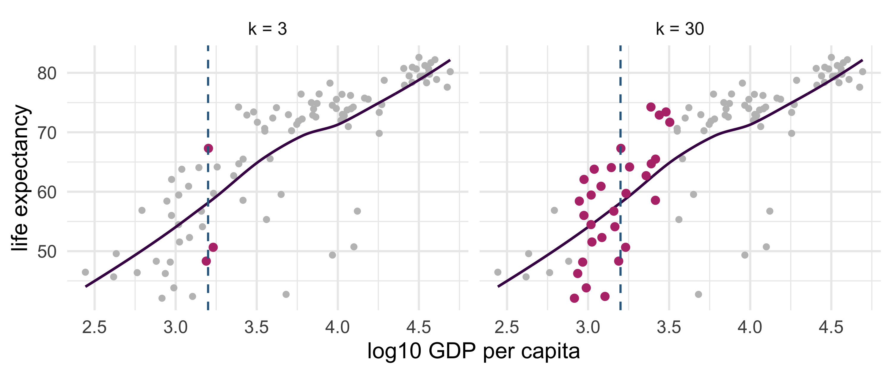
At \(k = 1\) the training error is exactly zero. Is that good news?
The leaderboard
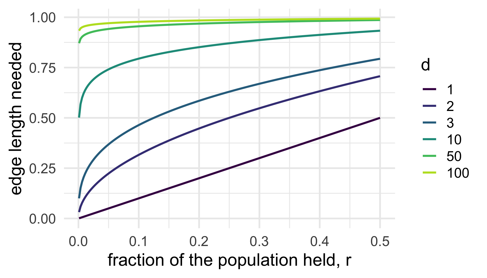
Which model wins? What about those error bars?…
The smooth cousin
Instead of “the \(k\) nearest, equally”, weight every training point by how close it is: \[ \hat f_h(x_0) = \frac{\sum_i K\!\left(\frac{x_i - x_0}{h}\right) y_i}{\sum_i K\!\left(\frac{x_i - x_0}{h}\right)}, \qquad K(u) = e^{-u^2/2} \]
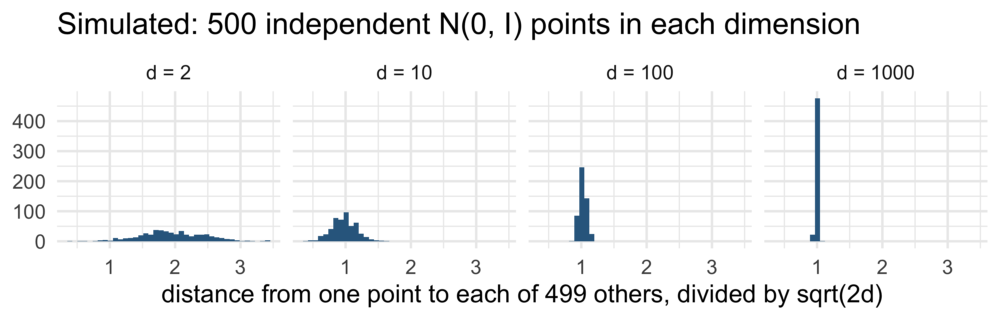
Both are local averages. What number is a local average trying to land on?
What makes a nearest-neighbor prediction wrong? board
\(y_i = f^\star(x_i) + \varepsilon_i\), inputs fixed, noise independent, mean \(0\), variance \(\sigma^2\); new \(Y_0 = f^\star(x_0) + \varepsilon_0\).
We want \(\mathbb E\big[(Y_0 - \hat f_k(x_0))^2\big]\), the expected squared error of the \(k\)-nearest-neighbor prediction at \(x_0\).
Two facts from ST102 do all the work at the board. Which two? Write them down before we start.
Bias–variance decomposition board
\(y_i = f^\star(x_i) + \varepsilon_i\), inputs fixed, noise independent, mean \(0\), variance \(\sigma^2\); new \(Y_0 = f^\star(x_0) + \varepsilon_0\).
Bias–variance decomposition. \[ \mathbb E\big[(Y_0 - \hat f_k(x_0))^2\big] = \underbrace{\sigma^2}_{\text{noise}} + \underbrace{\Big[f^\star(x_0) - \tfrac{1}{k}\textstyle\sum_{l=1}^k f^\star(x_{(l)})\Big]^2}_{\text{bias}^2} + \underbrace{\frac{\sigma^2}{k}}_{\text{variance}} \]
noise + bias² + variance. Variance falls in \(k\), always. Bias typically grows too, but it need not be monotonic (a constant \(f^\star\) keeps it at zero for every \(k\)).
Bias–variance decomposition, line 1
\[ Y_0 - \hat f_k(x_0) = \varepsilon_0 + \big[f^\star(x_0) - \hat f_k(x_0)\big] \]
Square, take expectations: \[ \mathbb E\big[(Y_0 - \hat f_k(x_0))^2\big] = \mathbb E[\varepsilon_0^2] + 2\,\mathbb E\big[\varepsilon_0 \,(f^\star(x_0) - \hat f_k(x_0))\big] + \mathbb E\big[(f^\star(x_0) - \hat f_k(x_0))^2\big] \]
Bias–variance decomposition, line 2
\(\varepsilon_0\) is independent of everything in \(\hat f_k(x_0)\) and has mean \(0\): \[ \mathbb E\big[\varepsilon_0 \,(f^\star(x_0) - \hat f_k(x_0))\big] = \mathbb E[\varepsilon_0]\; \mathbb E\big[f^\star(x_0) - \hat f_k(x_0)\big] = 0 \]
Left with \[ \sigma^2 + \mathbb E\big[(f^\star(x_0) - \hat f_k(x_0))^2\big] \]
Bias–variance decomposition, line 3
Add and subtract \(\mathbb E \hat f_k(x_0)\) inside the square: \[ \mathbb E\big[(f^\star(x_0) - \hat f_k(x_0))^2\big] = \big[f^\star(x_0) - \mathbb E\hat f_k(x_0)\big]^2 + \mathrm{Var}\big(\hat f_k(x_0)\big) \]
(The cross term is \(2[f^\star(x_0) - \mathbb E\hat f_k(x_0)]\,\mathbb E[\mathbb E\hat f_k(x_0) - \hat f_k(x_0)] = 0\).)
Bias–variance decomposition, lines 4 and 5
The neighborhood is fixed, so \[ \mathbb E\hat f_k(x_0) = \frac{1}{k}\sum_{l=1}^k f^\star(x_{(l)}), \qquad \mathrm{Var}\big(\hat f_k(x_0)\big) = \frac{1}{k^2}\sum_{l=1}^k \sigma^2 = \frac{\sigma^2}{k} \]
Substitute: \[ \mathbb E\big[(Y_0 - \hat f_k(x_0))^2\big] = \sigma^2 + \Big[f^\star(x_0) - \tfrac{1}{k}\textstyle\sum_{l=1}^k f^\star(x_{(l)})\Big]^2 + \frac{\sigma^2}{k} \qquad \blacksquare \]
(ESL §7.3, equation 7.10.)
Where the bias comes from
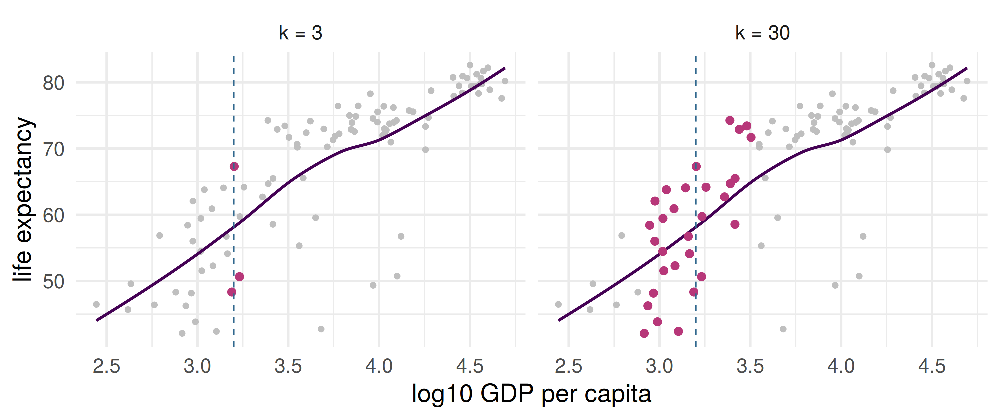
Pink: the neighbors used at the dashed line. Dark curve: a stand-in for \(f^\star\). With 30 neighbors the average of \(f^\star\) over the pink points is not \(f^\star\) at the line.
The curse of dimensionality
Inputs uniform on \([0,1]^d\). Take an axis-aligned cube of edge length \(e\) that sits inside the unit cube.
What fraction of the population lies inside it? So how long must the edge be to hold a fraction \(r\)? Write the formula, then evaluate it for \(d = 10\) and \(r = 0.01\).
The curse of dimensionality: edge length
How long must the edge be, to hold a fraction \(r\) of the population, in \(d\) dimensions?
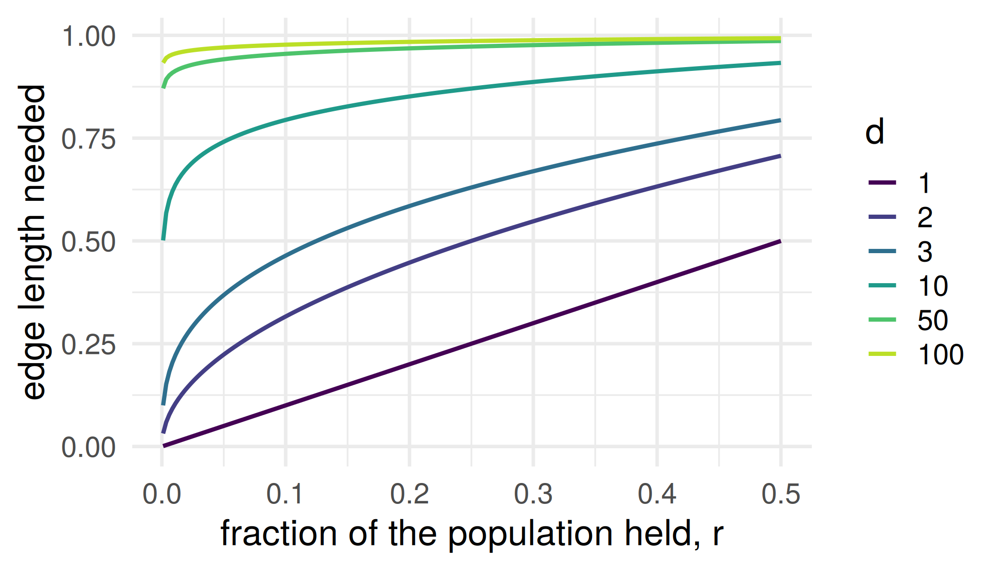
Far away, in many directions
| \(d\) | edge to hold 1% | to hold 10% |
|---|---|---|
| 1 | 0.01 | 0.10 |
| 2 | 0.10 | 0.32 |
| 10 | 0.63 | 0.79 |
| 100 | 0.95 | 0.98 |
In ten dimensions, a cube holding 1% of the population spans 63% of each axis. That is not local.
A nearest-neighbor set is a ball around the query, not a cube, and near the boundary the calculation changes, but the lesson carries: the nearest 1% of the data is far away. So the decomposition’s bias term is where dimension bites: the neighbors are far away, and \(f^\star\) has room to drift.
Distances concentrate
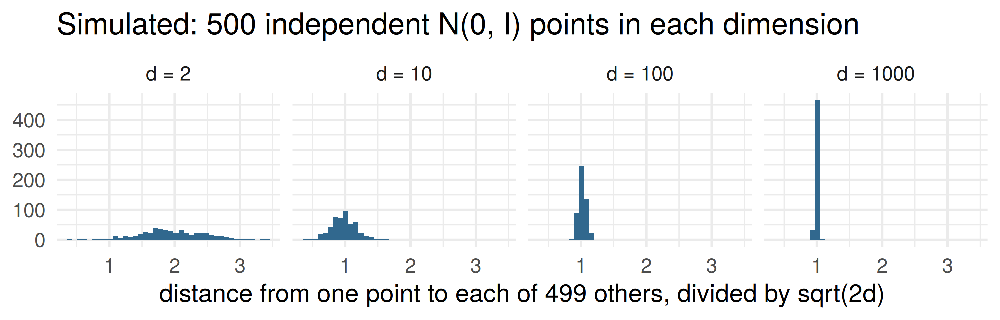
Why: \(\|X - X'\|^2/2d\) is an average of \(d\) independent coordinate terms, each with mean \(1\), so its spread falls like \(1/\sqrt d\): the same averaging that gave the bias–variance decomposition its variance term.
Distance concentration
Distance concentration (stated, not proved). For \(X, X'\) independent \(N(0, I_d)\), \(\|X - X'\|^2/2d\) has mean \(1\) and variance \(2/d\), so by Chebyshev \[ \Pr\!\left( \Big| \tfrac{\|X - X'\|^2}{2d} - 1 \Big| > \varepsilon \right) \le \tfrac{2}{d\varepsilon^2}, \] and by a union bound over the \(n-1\) distances from a query point, every neighbor’s squared distance lies within \(2d(1 \pm \varepsilon)\) with probability at least \(1 - 2(n-1)/(d\varepsilon^2)\). So for \(n\) fixed as \(d\) grows, the nearest neighbor is about as far as the farthest.
Two things to think about
1. Your 1-NN submission had training error zero. What is that number measuring, and what would the competition have scored instead?
2. Suppose we fit a model to the 142 countries in 2002 and test it on the same 142 countries in 1997, and it does well. Has it predicted anything new?
Until the seminar
For the gapminder data, write down the four parts of the competition: the unit, the inputs and outcome, the score, and how the held-out set is chosen.
Then, for each input in the dataset: would you have it at the moment you need the prediction, for a country whose life expectancy you don’t know?
Bring it to the seminar.
Reading
- ISLR ch. 1 (don’t skip the section on notation and simple matrix algebra), and ch. 2 sections 2.1–2.2. Section 2.2.2 is the bias–variance decomposition in words. The lab in 2.3 if R is new to you.
- PPA ch. 1.
Deeper: ESL §2.5 (the curse) and §7.3 (the bias–variance decomposition).
ST310 Machine Learning